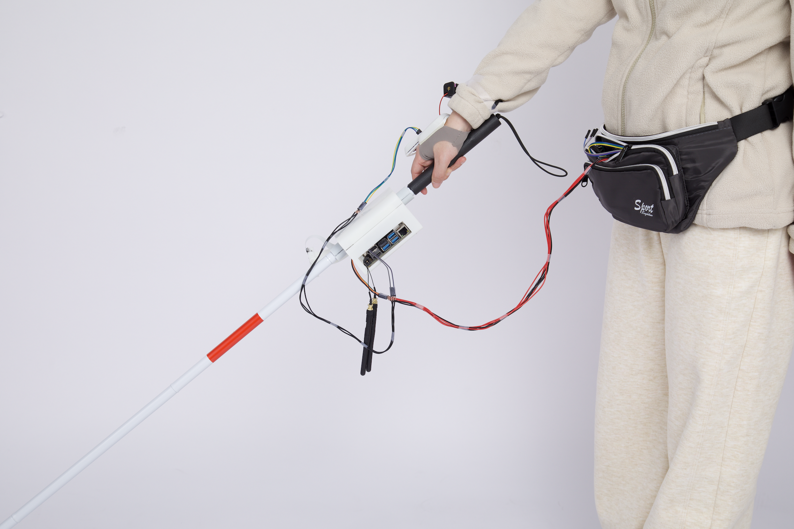
← Back to WorkAn AI-powered wearable navigation device for visually impaired individuals — translating real-time environmental data into tactile feedback for safer, more independent mobility.
WanderPal is a wearable navigation device for visually impaired individuals, focusing on safety and independence. Its innovative use of AI and tactile feedback transforms navigation into an intuitive and empowering experience.
The device uses a YOLO-based computer vision model to detect curbs, crossings, and road boundaries in real time, then maps those detections to a grid of 27 vibration motors on a wearable glove — giving users spatial awareness through touch rather than audio.
My contributions spanned UX research, interaction design, and development of the mapping module and dataset collection pipeline.
Cane-based navigation requires constant active attention. GPS audio apps are disruptive in public and cognitively demanding. Current wearables lack the precision needed for fine-grained spatial guidance in dynamic urban environments.
WanderPal explores tactile feedback as a quieter, lower-cognitive-load channel — delivering navigation cues through the skin instead of the ears.
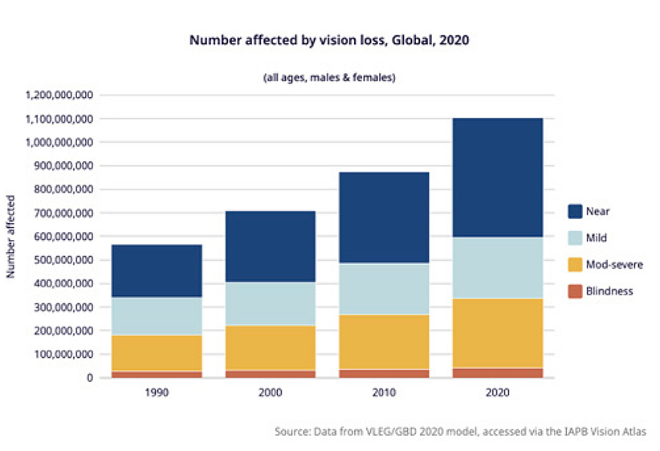
The urban environments WanderPal is designed to navigate
We began with background research and in-depth interviews with visually impaired users to understand their daily navigation challenges, mental models, and existing tool usage.
To better study non-visual perception, we also created an auditory simulation scene that recreated a real walking journey from a residential area to a subway station — experiencing the navigation challenge from the user's perspective.
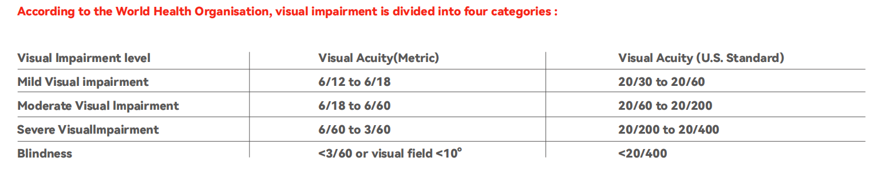
Research methodology and process overview
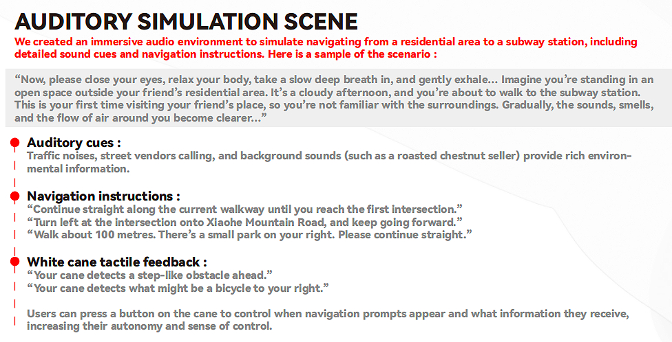
Field research documentation and interview insights
This process helped us identify three core design priorities:
Based on our research, we decided to focus on tactile feedback instead of audio guidance. Our design goal was to build a system that could detect key navigation markers and translate them into simple, real-time feedback on the user's hand.
We began by studying existing tools like the white cane — understanding what it does well (mechanical environmental sensing) and what it can't do (detect elevated or distant hazards, provide directional cues without sweeping).
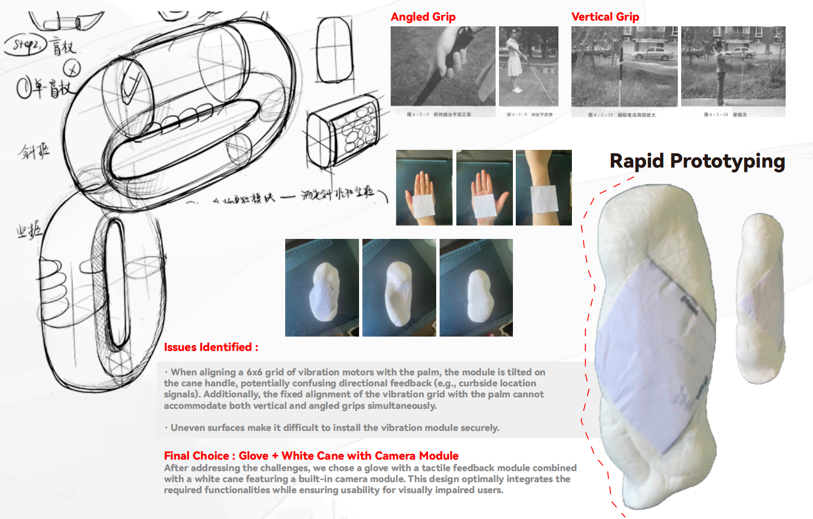
White cane: the baseline for tactile navigation
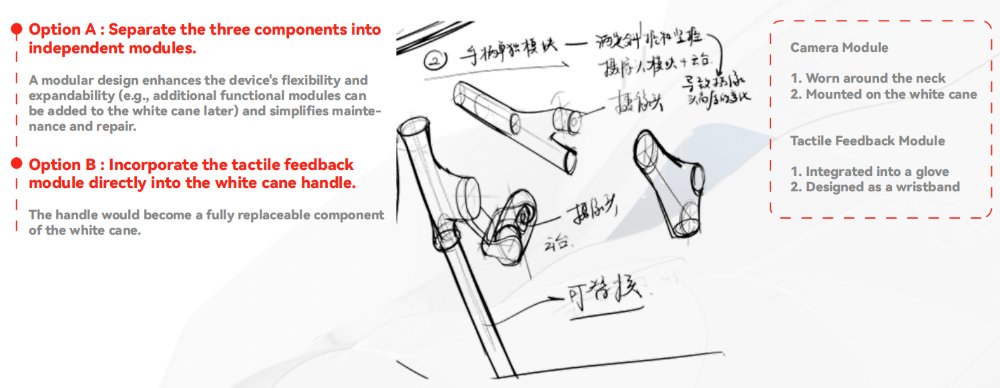
Early ideation sketches exploring form and feedback modalities
Camera input — captures the road environment in real time.
AI detection — YOLO model identifies curbs, crossings, and navigation markers.
Haptic output — detected spatial data is mapped to a vibration motor grid on the glove, felt by the user as directional cues.
WanderPal combines computer vision and wearable haptics into a single navigation workflow. The pipeline connects real-world sensing to physical feedback with minimal latency.
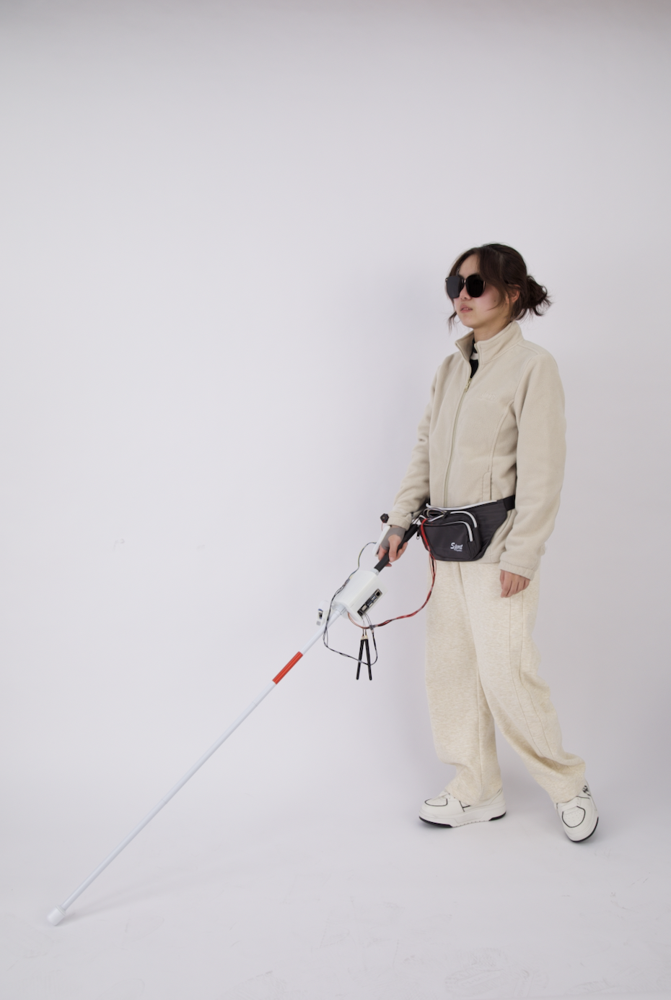
End-to-end system workflow: from camera input to tactile output
The camera captures the road ahead. A YOLO-based detection model identifies navigation markers such as curbs and crossings. The detected visual information is then mapped into a grid-based tactile feedback system, which activates vibration motors on the glove — allowing users to feel spatial cues instead of relying only on sound.
After training and tuning the YOLO model on collected road environment data, the final parameters achieved 74.2% detection accuracy — demonstrating real-world viability for navigation assistance in typical urban settings.
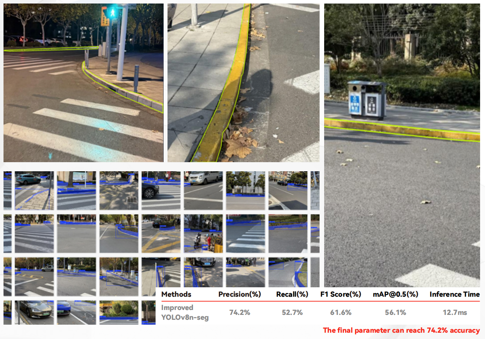
YOLO segmentation test results — 74.2% accuracy on curb and crossing detection
The core interaction innovation is the motor grid layout: 27 vibration motors arranged across the glove surface, each mapped to a spatial zone in the camera's field of view. As objects or edges are detected in a region, the corresponding motors activate — giving the user a spatial "feel" for their environment.
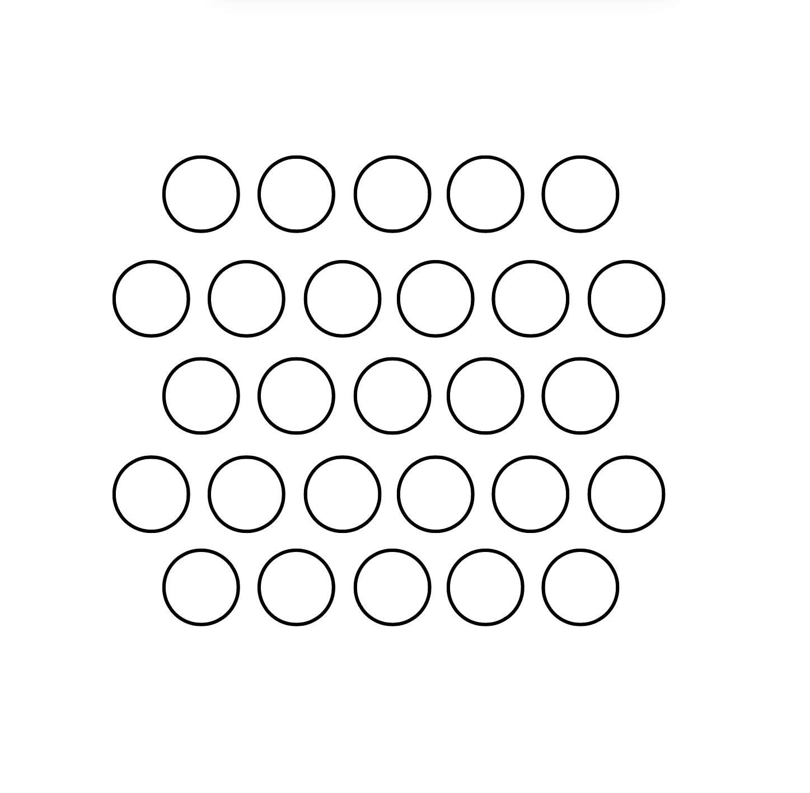
27-motor array placement diagram — each motor maps to a spatial zone in the camera field
The hand has a high density of mechanoreceptors, making it ideal for spatial discrimination. Users can quickly learn to interpret the motor grid as a spatial map — understanding relative direction and distance of detected features without conscious decoding.
The first hardware iteration established the core signal pipeline:
The camera captures real-time images and transmits them to a PC via USB.
A Python program on the PC performs object detection on the images and converts detection results into motor vibration signals.
Vibration signals are transmitted via serial communication to an Arduino Mega, which drives the array of 27 vibration motors.
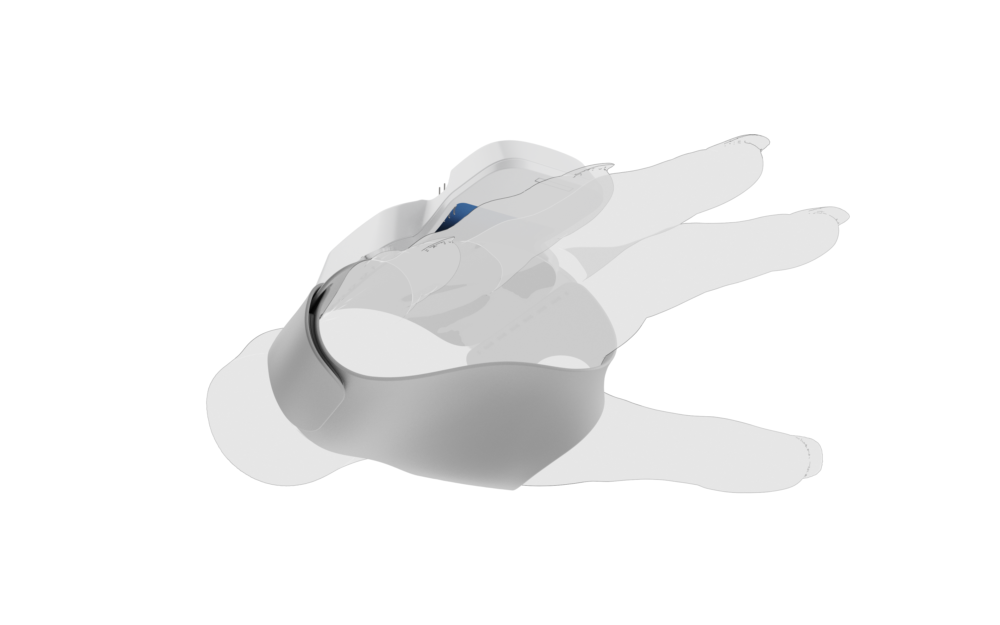
First prototype — wearable assembly testing
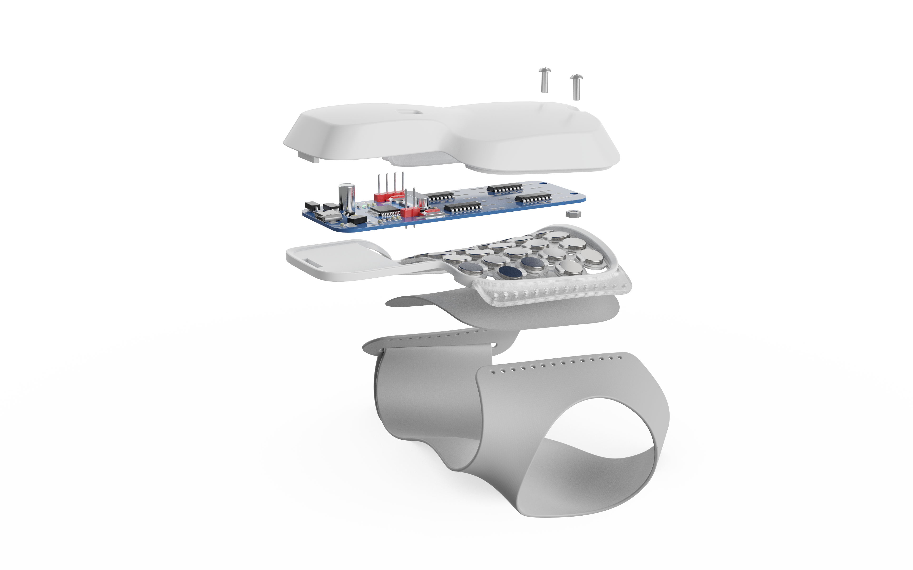
Iterating on motor placement and glove fit
We built multiple prototypes to test both the wearable form and the feedback mechanism. The process included glove experiments, motor array testing, hardware integration, and 3D modeling of the final wearable enclosure.
Through iteration, we refined the device to better fit the hand, improve motor placement, and support more stable hardware assembly.
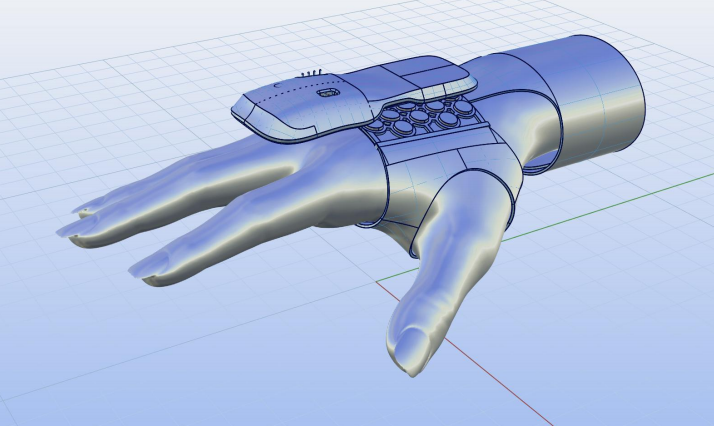
3D model of the final wearable enclosure
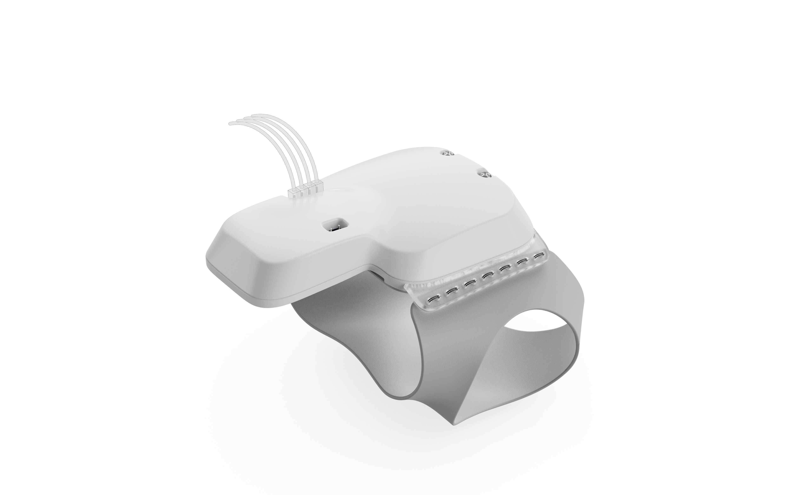
Custom PCB to drive the 27-motor array
The final hardware version replaced the PC with an onboard Jetson Nano B01, making WanderPal fully self-contained and portable. The Jetson Nano handles camera capture, YOLO inference, and signal generation locally — eliminating the need for an external computer.
Camera → Jetson Nano B01 (object detection + signal conversion) → Custom PCB → 27 vibration motors
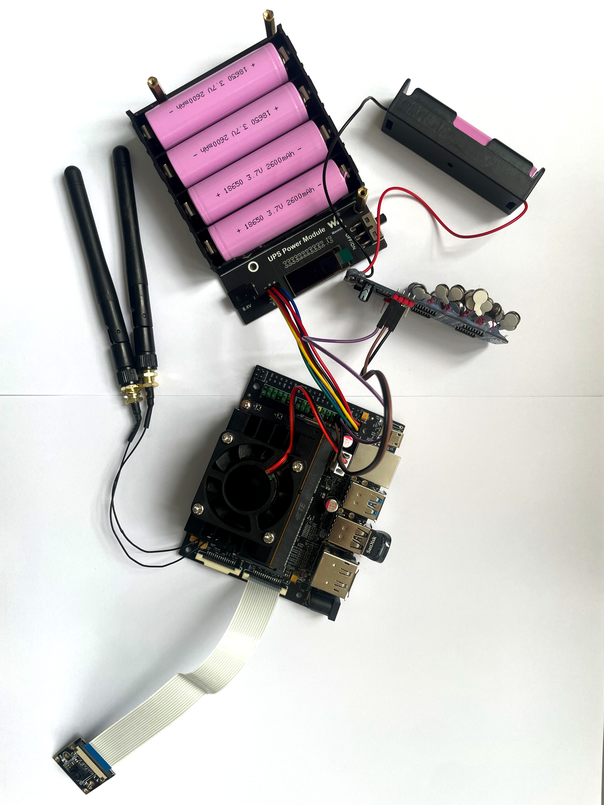
Jetson Nano B01 — onboard processing unit
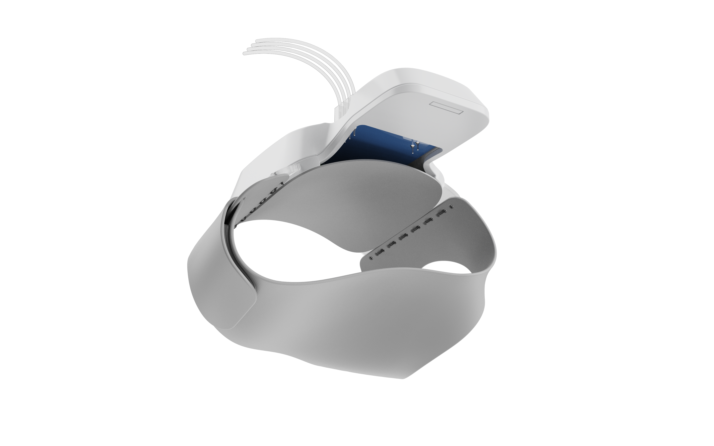
Final hardware integration with PCB
Rigid frame + custom PCB integration — key improvements in the final version
WanderPal — final product
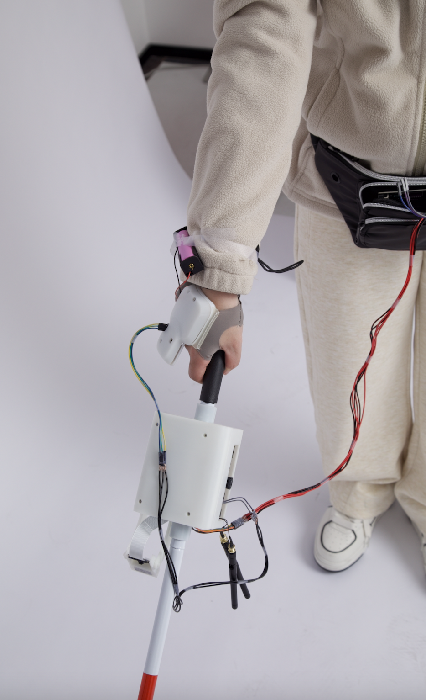
Final glove design detail
WanderPal demonstrates that combining AI, wearable hardware, and haptic interaction design can meaningfully support more independent and confident mobility for visually impaired users — without relying on audio cues that add cognitive burden.
This project pushed me to think across disciplines simultaneously: computer vision constraints shaped what UI feedback was even possible; hardware limitations shaped form factor; and the lived experience of visually impaired users shaped everything else. True accessibility design is a systems problem, not a feature problem.
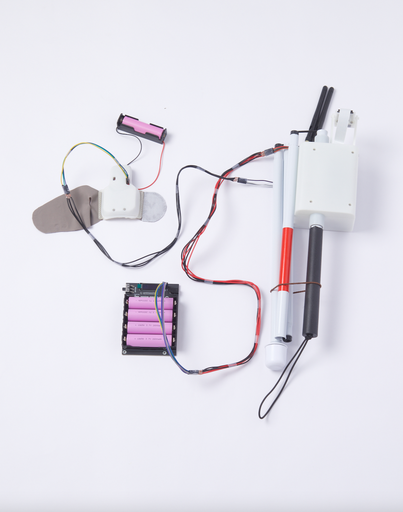
WanderPal in use — user testing the final glove prototype